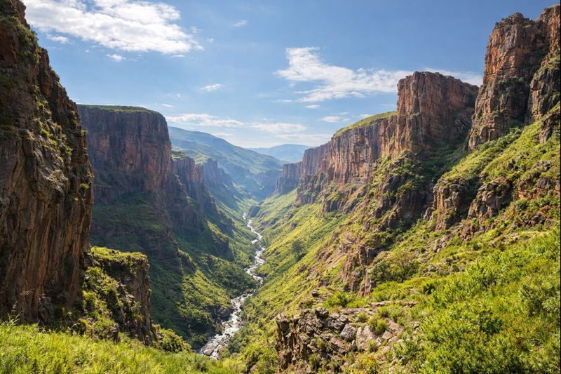

Semonkong
85k
Maletsunyane Falls
Une chute spectaculaire de 192m, l'une des plus hautes d'Afrique australe

RetourUn royaume au-dessus des nuages, terre de cavaliers et de cimes
Le Lesotho est une nation unique en son genre : c'est le seul pays au monde situé entièrement à plus de 1400 mètres d'altitude. Enclavé au cœur de l'Afrique du Sud, ce "Royaume dans le Ciel" offre des paysages d'une rudesse magnifique, où les sommets enneigés en hiver côtoient des vallées verdoyantes en été. Ici, le cheval est roi et les cavaliers Basotho, drapés dans leurs couvertures traditionnelles colorées et coiffés de leur chapeau Mokorotlo, parcourent des sentiers escarpés menant à des sites grandioses comme les chutes de Maletsunyane. Entre les barrages vertigineux de Katse et les empreintes de dinosaures de Quthing, le Lesotho est un sanctuaire de paix et d'aventure pour les amoureux de grands espaces.
Découvrez les 15 merveilles du Royaume dans le Ciel
Une chute spectaculaire de 192m, l'une des plus hautes d'Afrique australe

La route de montagne la plus mythique, reliant le Lesotho au KwaZulu-Natal

Le plateau sacré et berceau de la nation Basotho, forteresse du roi Moshoeshoe I

Une merveille d'ingénierie et le plus haut barrage à voûte d'Afrique

Des formations rocheuses étranges et une biodiversité alpine unique

Skier en Afrique ! Une station de sports d'hiver unique à 3222m d'altitude

Art rupestre des San et lieu d'histoire royale dans un cadre naturel majestueux

Maisons troglodytes en boue toujours habitées, témoignage d'une résilience séculaire

Réserve de haute altitude offrant des sentiers de randonnée et des vues sur les cascades gelées

Forêts d'altitude préservées et rivières cristallines au pied des cimes

La capitale paisible sur les rives du fleuve Caledon, centre vibrant de la culture Basotho

Le centre intellectuel et historique du pays, riche en archives et en culture
Remontez le temps avec des empreintes de dinosaures parfaitement conservées
Le point de départ des expéditions vers les plus hauts sommets du Drakensberg
Le centre d'aventure pour le cheval, le trekking et le rappel de cascade
La fierté d'un peuple cavalier au coeur des sommets.
La culture du Lesotho est indissociable de ses montagnes. Le peuple Basotho, unifié par le roi Moshoeshoe I au XIXe siècle, a su préserver son indépendance et ses traditions au sein d'un environnement majestueux mais exigeant. Le vêtement traditionnel, la couverture Basotho (Kobo), n'est pas seulement une protection contre le froid, mais un symbole de statut et d'identité orné de motifs ancestraux. Le chapeau conique en paille, le Mokorotlo, inspiré par la forme du mont Qiloane, est l'emblème national présent jusque sur le drapeau. La musique Famo, rythmée par l'accordéon, résonne encore dans les villages où la vie s'écoule au rythme des saisons et des troupeaux.
Le chapeau traditionnel Basotho, symbole d'unité et de fierté nationale, présent sur tous les marchés.
Le poney Basotho est le moyen de transport légendaire du royaume, robuste et infatigable sur les pentes raides.
La "Montagne de la Nuit", forteresse imprenable et lieu de sépulture des rois, coeur battant de l'histoire.
Un genre musical unique né dans les mines et les villages, porté par l'accordéon et les percussions.

L'artisanat d'exception du Lesotho. Des couvertures Basotho aux chapeaux sacrés.
 Emblème
Emblème
Le chapeau traditionnel en paille tissée à la main, symbole national du Lesotho.
 Tradition
Tradition
Couverture en laine de haute qualité aux motifs symboliques, portée par les cavaliers.
 Luxe
Luxe
Écharpe ou tapisserie réalisée à partir de la laine des chèvres Angora des montagnes.
Vases et objets en argile locale décorés avec des pigments naturels.
Petites figurines sculptées dans la pierre locale, représentant la vie quotidienne.
Mélange de plantes sauvages des cimes pour une infusion unique et tonifiante.

Maseru, Luxe & Casino

Maseru, Centre & Style

Ts'ehlanyane, Retraite Nature

Semonkong, Aventure & Cheval

Katse, Vue sur Barrage

Sehlabathebe, Immersion Sauvage
La cuisine du Lesotho est simple, nourrissante et adaptée aux rigueurs du climat de montagne.
Bouillie de maïs consistante, base de tous les repas Basotho.
Légumes verts sauvages (épinards ou choux) sautés à l'oignon et aux épices.
Viande de mouton mijotée longuement avec des racines et des légumes.
Truite fraîche pêchée dans les rivières froides du royaume, grillée au citron.
Mélange de sorgho, de haricots et de citrouille, un plat traditionnel complet.
Pain de maïs traditionnel cuit à la vapeur, moelleux et savoureux.
Bière traditionnelle de sorgho, boisson fermentée omniprésente dans les villages.
Maïs concassé et haricots mijotés, un classique réconfortant.
Citrouille locale rôtie au feu de bois avec une touche de miel sauvage.
Variante locale de galette garnie de légumes et de fromage de chèvre.
Baies sauvages et fruits de saison récoltés sur les pentes en été.
Infusion chaude servie avec du lait et du sucre après une longue chevauchée.
Partagez la ferveur et la culture des Basotho lors de leurs grandes célébrations.
Grandes festivités à Maseru (4 Octobre) avec chants, danses et parades équestres.
Le plus grand festival culturel (Septembre/Octobre) célébrant les arts, la musique et le théâtre Basotho.
Compétitions de chevaux Basotho spectaculaires attirant les cavaliers de tout le royaume.
La meilleure période pour la randonnée et le cheval. Les journées sont chaudes et les paysages verdoyants. Prévoyez des vêtements de pluie pour les orages de l'après-midi.
Parfait pour le ski à AfriSki. Le temps est sec et ensoleillé, mais les nuits sont glaciales (souvent en dessous de zéro). Les cascades peuvent geler, créant un spectacle magique.
Pays sûr et accueillant. Vigilance normale à Maseru. En montagne, soyez préparé aux changements climatiques brusques.
Vêtements chauds indispensables, même en été. Bonnes chaussures de marche et protection solaire forte en raison de l'altitude.
Exemption de visa pour de nombreuses nationalités (UE, USA) pour moins de 14 jours. Vérifiez les conditions de transit par l'Afrique du Sud.
Loti (LSL), à parité avec le Rand sud-africain (ZAR). Le Rand est accepté partout. Cartes bancaires acceptées dans les villes principales.
Expert Cavalier & Trekking
Lebohang a grandi à cheval dans les montagnes et vous fera découvrir les sentiers les plus secrets du Sani Pass.
Experte Histoire & Culture
Spécialiste de l'histoire du roi Moshoeshoe I, Masechaba vous guidera avec passion à Thaba Bosiu.
Guide Nature & Ski
Expert des parcs nationaux et moniteur de ski chevronné, Thabo vous accompagnera à AfriSki et Sehlabathebe.